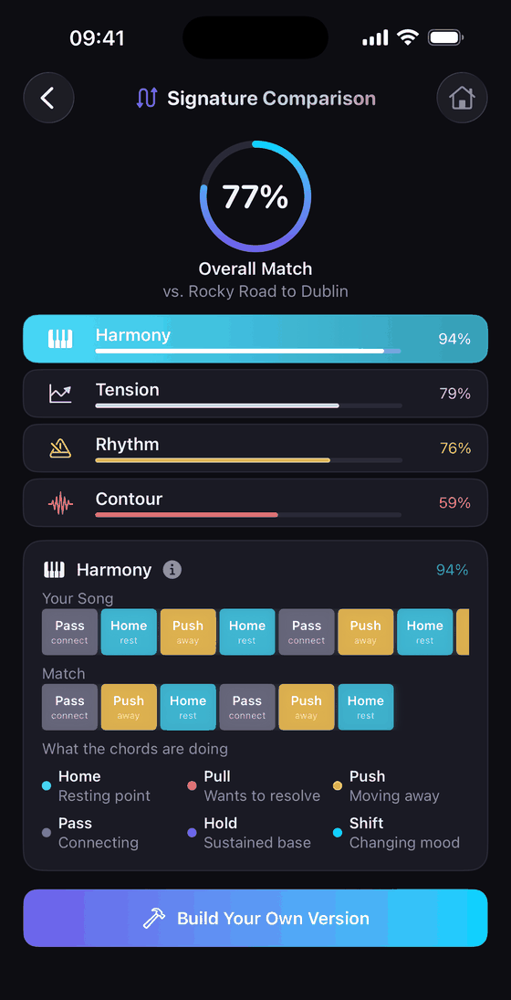

What's actually protectable, how to check your own melody, and what a similarity
percentage really means.
There is no yes-or-no answer — similarity is a spectrum, and only part of what your ear
hears as “similar” is actually protectable. What matters is which element is similar
and how much of it, and you can work that out yourself in about twenty minutes.
Written for songwriters, not lawyers. This is general information, not legal advice.
Strip both songs back to bare notes and the question stops being “does it feel similar?”
and starts being “how long is the run that matches?”
The short version
Chord progressions, grooves, tempo and genre are almost never the problem.
Melody and lyrics are where the real risk lives — a distinctive sequence of pitches
and rhythms, or a hook phrase.
Two things have to be true for a claim: the melody is substantially similar, and you
plausibly had access to the original. Independent creation is a real defence.
Subconscious copying is common and forgivable — catching it before release is the entire point.
What's actually protectable — and what isn't
Most of the time a songwriter panics, they're panicking about the wrong layer of the song.
Almost never a problem
Chord progressions. I–V–vi–IV underpins hundreds of hit songs. Progressions are
the shared vocabulary of popular music, not property.
Groove, tempo and feel. Two songs at the same BPM with the same drum pattern will
sound related. That's genre, not copying.
Scales, modes and common intervals — the raw materials.
Production choices, like a similar synth patch or mix.
Where the real risk is
Melody. The specific sequence of pitches and their rhythm. The single most
common basis for a claim.
Lyrics. A distinctive phrase, especially a title line.
A signature hook — the three or four seconds someone can identify the song from.
So if your song reminds you of another because of the chords or the vibe, that's the least worrying
kind of resemblance. If you can sing your melody over their backing track and it lands note for note,
that's worth checking properly.
Access matters as much as similarity
Similarity alone isn't enough. The other half is whether you could plausibly have heard the original.
For an obscure track nobody knows, arriving at the same phrase independently is entirely possible and is
a genuine defence. For a song that spent a decade on the radio, it's much harder to argue you'd never
encountered it.
This is why subconscious copying is the interesting case. You aren't stealing anything — a
phrase you absorbed years ago surfaces as though it were new. It happens to careful, honest writers
constantly. The only real remedy is to check before you release, not after.
How to check your own song in twenty minutes
Strip it to the melody. Sing or play the line alone — no chords, no production, no
lyrics. Everything that was disguising the similarity is gone.
Change the key and the tempo. Resemblance hides behind arrangement. Transposing and
slowing a phrase down often exposes an overlap you'd been hearing past for weeks.
Search the phrase. Hum-to-search in the Google app or Shazam, and try a contour
search on a melody database. This catches famous matches, though it misses most catalogue tracks.
Ask the question backwards. What were you listening to the week you wrote it?
Subconscious borrowing almost always traces to recent rotation.
Break it into dimensions. “Similar” is rarely uniform. Harmony, rhythm, melodic
contour and tension arc can each be close or distant, and only some of them matter. A single overall
impression hides which one is driving the feeling.
What a similarity percentage actually means
A number is a place to look, not a verdict. No threshold makes a song legally infringing — that
judgment weighs how distinctive the borrowed part is, how central it is to both songs, and access.
A high score on a four-note run half of pop music shares means very little. A moderate score across
your entire chorus means a lot.
Be sceptical of very high numbers. Genuinely close pieces
land in the seventies on a note-level comparison, not the high nineties. Any tool showing you 97% is
measuring something loose, or selling you certainty it doesn't have.
If it comes back close
A close read is not a dead end. The fix is usually small, because the identity of a phrase tends to
live in two or three notes:
Move the interval at the peak. The highest note carries most of a phrase's identity
— shifting it a step often resolves the whole thing.
Change the rhythm, keep the pitches. Displacing the phrase against the beat can make
it read as new while keeping what you liked.
Rewrite the identifying notes only. You rarely need to abandon the melody.
If it's still close and the song matters commercially, talk to a music lawyer or
approach the rights holder about a credit. Both are ordinary, and far cheaper before release than after.
Songneer breaks a song down into its musical signature — harmony, tension, rhythm and melodic contour
— and scores each dimension separately against a reference, so you can see which part is close
rather than guessing from an overall impression.

It then finds public-domain pieces that share that signature and helps you build your own composition
from legally-clear material, exporting MIDI to GarageBand, Logic or any DAW. It runs on your iPhone and
is free to try.
It's a craft tool, not a legal clearance service. It won't tell you whether
you're infringing — nothing can. It tells you where to look.
In practice, no. Common progressions are shared building blocks of popular music. If your song
resembles another only in its chords, that isn't usually the kind of similarity that creates a problem.
How many notes can you copy before it's a problem?
There is no note count. A short phrase can matter if it's the distinctive hook of a well-known song,
while a longer run of ordinary scale movement may not matter at all. Distinctiveness counts for more
than length.
What if I copied a melody without realising?
That's subconscious copying, and it's common among writers who listen widely. It doesn't make you
dishonest, but it isn't automatically a defence for a well-known song. Catching it before release is
what gives you cheap options.
Can software tell me whether my song is legal?
No, and be wary of anything implying otherwise. Software can measure how much two pieces overlap.
Whether that overlap creates liability is a legal judgment involving access, distinctiveness and context.